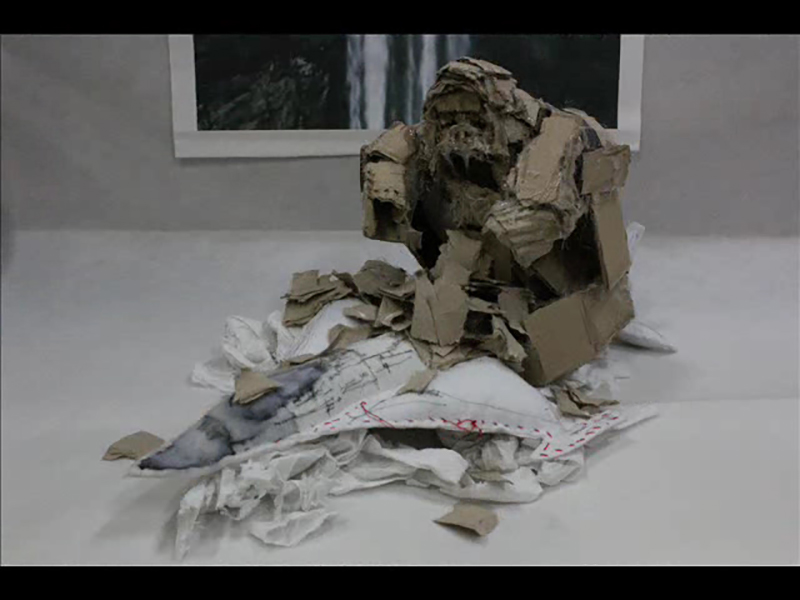
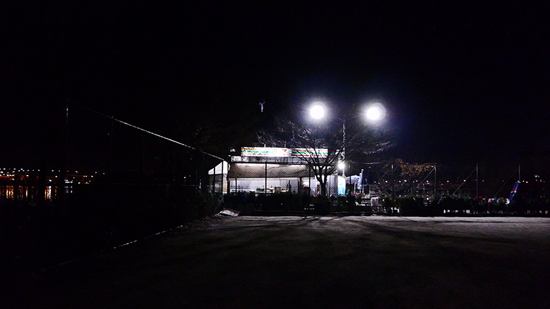
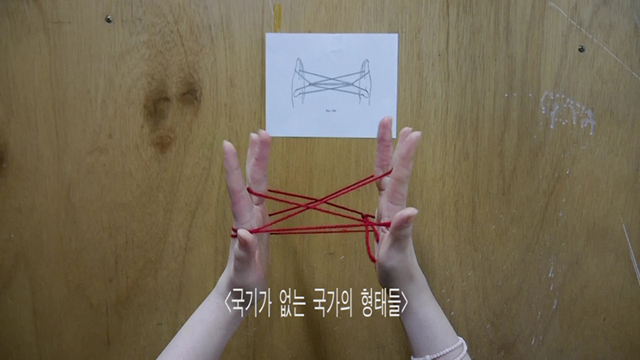
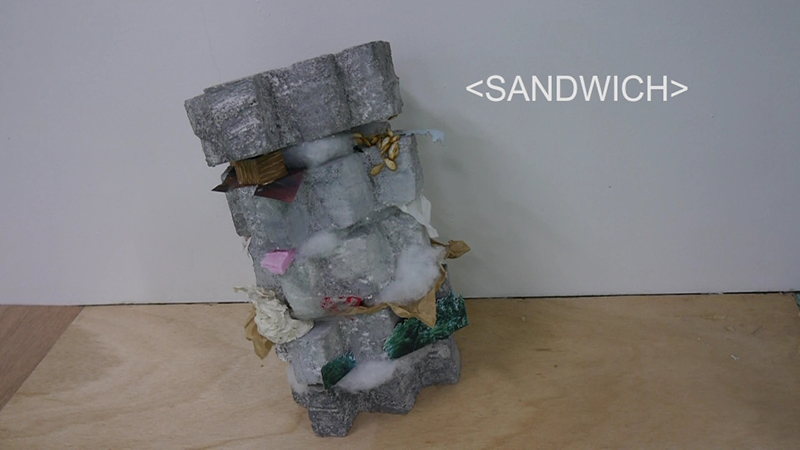
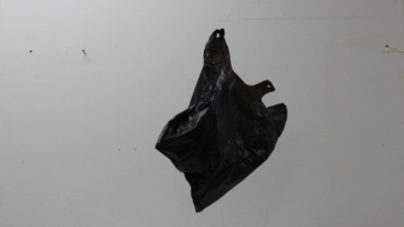
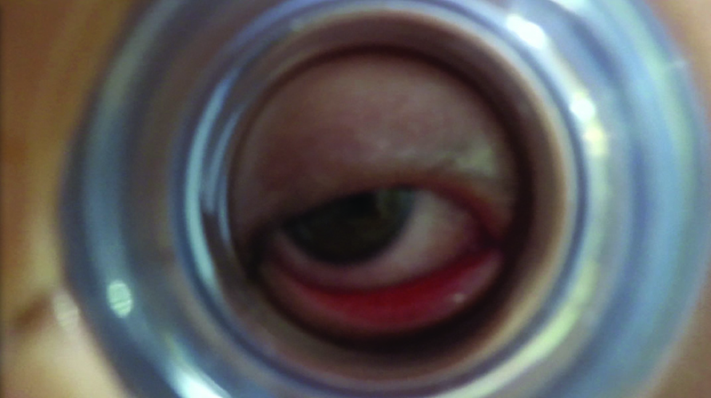
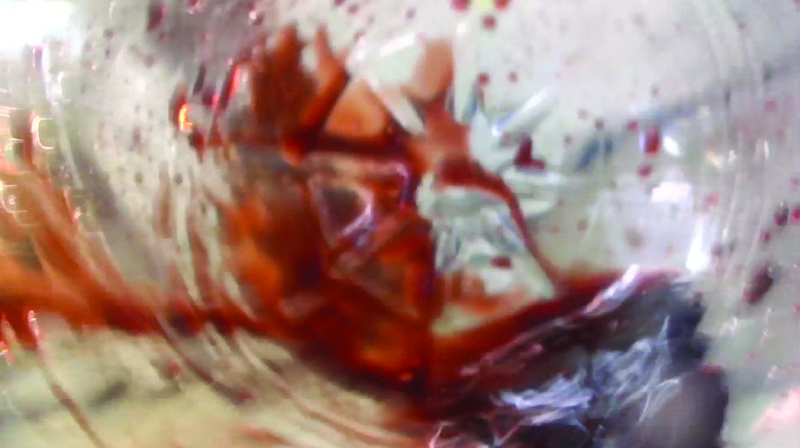
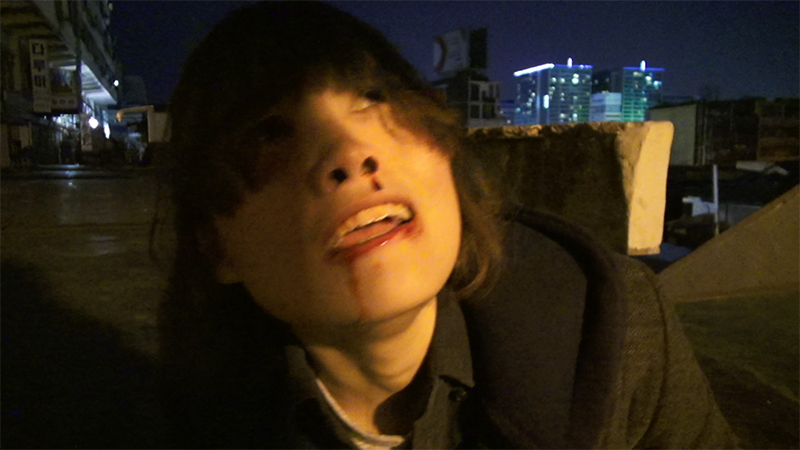
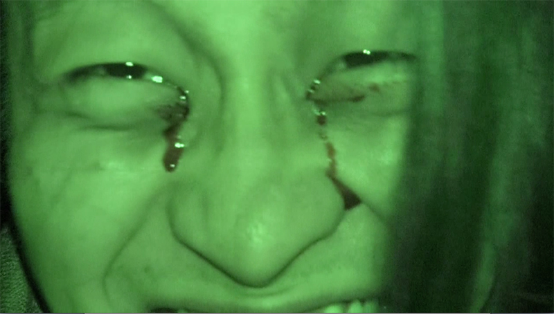
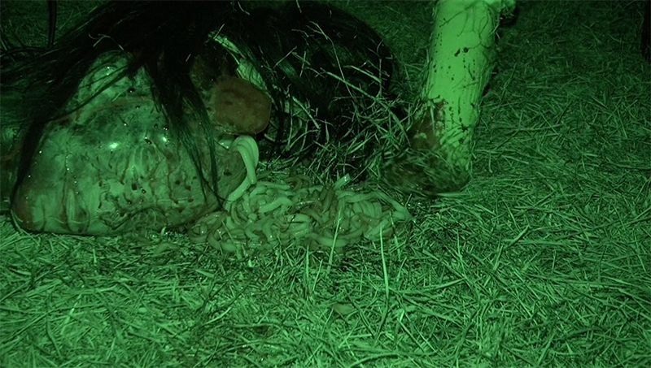

- 2015. 8. 19. 20:00
- 23층
- 최리아 RIACHOI
- "나는 양자 사이에서 누락된 것을 찾는다. 말이 충만할 때에도, 의심이 함께 자리한다. 서로가 담게 되는 말의 공간은 사실 확인된 바가 없다. 나는 이 관계라는 것의 (아주 오래전) 정수리 냄새가 몹시 궁금하다."
- <불임들 blow up>, 1'3'', 2013
- 되지도 않을 것을 열심히 합치는
- 길거나
- 엄청 센 것
의 고군분투.
- <A POWER LOOM>, 12', 2014
- 진공이 가득찬 상점에 대한 이야기.
- <거미가침 Geo mi ga ciM>, 9’13’’, 2014
- "그 애들은 심심할 때마다 거미를 태우곤 헀어."
- <galaxy>, 12'30'', 2016
- *시놉시스가 제공되지 않습니다.
-

-

-

-

-

- 21:00
- 류한솔 Ryu Han-sol
- 촉각을 자극하는 효과음에 관심이 있다. 또한, 문자화한 촉각적 소리를 눈으로 읽으며 상상이 되는 것들이 좋다. 신체의 훼손이라는 극단적 상황을 주로 상상하고, 실제와 허구 사이의 거리를 이용해 내가 느낀 삶의 인상들을 보여주고자 한다.
- <퐁퐁>, 6'7'', 2014
- 갈증 해소를 위해 원샷한 생수병 안을 바라보다 눈알이 병 입구에 끼어…
주의: 다소 잔인한 장면 묘사.
warning: this video contain disturbing images
- <와르르르>, 4'48'', 2014
- 어느 밤 을지로, 친구에게 얼굴을 가격당해 이빨이 바닥에 떨어지는데…
- <드투-드 튝뜥>, 12'51'', 2016
- 온 국민이 홀렸던 2002년 월드컵 영광의 기억들…
주의: 다소 잔인한 장면 묘사.
warning: this video contain disturbing images
-

-

-

-

-
